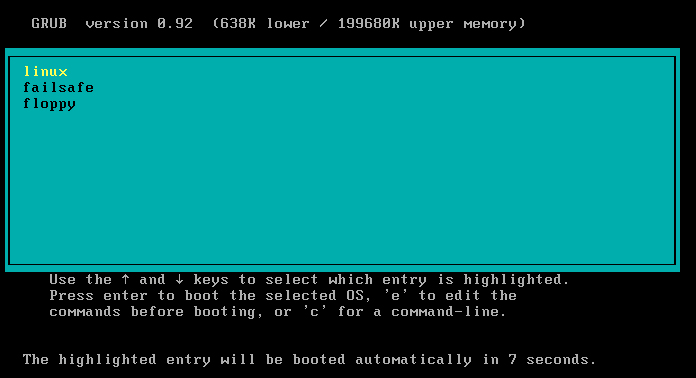

|
|
||||||||||||||
since2012/04/23 |
 |
|
||||||||||||
 |
|
|
|
|
||||||||||
|
|
|
|
|
|||||||||||
|
|
|
|
||||||||||||
|
|
|
|
|
|
|
|
|
|
|
|
|
|
|
|
变换默认的登入模式
Lilo ：配置文件 /etc/lilo.conf, 以预设的 lilo.conf 新增一个开机档, 安装 lilo ,一些问题的解决之道
Grub ：配置文件 /boot/grub/menu.lst, 安装 grub 在系统中, 开机手动设定选项
可启动盘与救援磁盘制作
本章习题练习
开机流程分析
开机不是只要单击电源钮而关机只要关掉电源钮就可以了吗？有何大学问？话是这样没错啦，但是由于 Linux 是一套多人多任务的操作系统，你难保你在关机时没有人在在线，如果你关机的时候碰巧一大群人在在线工作，那会让当时在在线工作的人马上断线的！那不是害死人了！一些数据可以无价之宝哩！另外，与 DOS 环境不同的是， Linux 在执行的时候，虽然你在画面上只会看到黑压压的一片，完全没有任何画面，但其实他是有很多的程序在背景底下执行的，例如邮件程序、浏览器主机程序等，你如果随便关机的话，是很容易伤害硬盘及数据传输的动作的！所以在 Linux 下关机可是一门大学问喔
既然开机是很严肃的一件事，呵呵，那我们来了解一下整个开机的过程吧！好让大家比较容易发现开机过程里面发生错误的地方，与解决之道！不过，由于开机的过程中，那个 Boot Loader 使用的软件可能不一样，例如 Mandrake 9.0 已经同时提供 Lilo 与 Grub 这两个开机管理程序，虽然 lilo 与 grub 的启动过程或许有点不太相同，但是他的原理则都是一样的哩！这里我们先介绍较老牌的 Lilo 啰！ Lilo 是什么？！简单的说，他是 LInux LOader 的缩写，就是 Linux 开机时候载入的咚咚就对了！这东西可是控制了你的多重引导的命脉！底下的篇幅会再分别介绍这两套开机管理程序！底下先开始来谈谈 Linux 是如何开机的呢？基本的流程为：大概的流程就是上面写的那个样子啦，而每一个程序的内容主要是在干嘛呢？底下就分别来谈一谈吧！
- 加载 BIOS 的硬件信息；
- 读取 MBR 的 Kernel Loader (亦即是 lilo, grub, spfdisk 等等)开机信息；
- 加载 Kernel 的操作系统核心信息；
- Kernel 执行 init 程序并取得 run-level 信息；
- init 执行 /etc/rc.d/rc.sysinit 档案；
- 启动核心的外挂式模块 (/etc/modules.conf)；
- init 执行 run-level 的各个批处理文件( Scripts )；
- init 执行 /etc/rc.d/rc.local 档案；
- 执行 /bin/login 程序；
- 登入之后开始以 Shell 控管主机。
- 寻找 BIOS 加载硬件信息：
稍微有 PC 硬件经验的人们大概都知道 BIOS ( Basic Input/Output Setup ) 的作用！他是第一个被加载计算机的数据！你主机的 CPU 数据、开机顺序、硬盘大小、芯片组工作状态、PnP 的开启与否、内存的频率等等等...这都记录在 BIOS 当中！所以啦，开机之后，系统会先去找这个东西；
- 可开机硬盘的 MBR 读取 Kernel loader：
再来呢？呵呵！当然就是硬盘的开机数据啰！由于个人计算机的系统在读完 BIOS 之后，会先去读取第一个开机硬盘的第一个扇区（就是 master boot record, MBR 啰！），还记得这个 MBR 吗？嗄！忘记了？赶紧回到第二篇好好的再复习一遍ㄋㄟ?。而这个扇区主要就是在记录开机的信息！还记得上面提到的 Lilo 及 grub 吧？他的纪录就是在这里啰！所以啰，这个时候 Lilo 纪录的信息就会被读出来，系统并依 Lilo 的信息去不同的系统开机，这也就是多重引导设定的地方啦。
好了，先再来回忆一下，如果你是以 grub 程序开机的话，那么在开机的时候会显示什么数据呢？呵呵！会显示蛮多的开机选单，没错?就是『选单』，然后选择了你的选择项目之后，系统就会跑到该扇区去读取该操作系统的核心啰！呵呵！所以一个好的 boot loader 会具有两个功能，就是：
- 选单功能 ( menu )
- 指向功能 ( pointer )
那么为何要有 loader 呢？我想，我们得先来探讨一下这个话题才行！要探讨之前先来了解一下，晓不晓得 Windows 与 Linux 的文件格式一不一样？！呵呵！当然不一样对不对，好了，那么再来说一说，请问，你的计算机怎么知道你的硬盘的数据是什么系统？哈哈！那就是 loader 的主要功能啰！在你能使用系统之前，一定需要加载核心对吧！？但是怎样让你的硬件认识核心呢？那就是 kernel loader 的主要功能了！所以这里需要提出的是， Linux 的 loader ( lilo 或 grub ) 是可以认识 windows 的核心档案的，但是 Windows 的 loader 却不认识 Linux 的核心档案，因此，作为一个多重引导的设定 loader ，就无法使用 Windows 所提供的 loader 啰！由于需要让系统认识你的 kernel ，因此，就需要 kernel loader 啦！这样想就对啦！
这一部份的信息我们在后续的章节会再提及！
- 载入核心( Kernel )：
好了，等我们在 grub 的选单中选择了 Linux 这个系统，然后主机跑到 Linux 所在的硬盘之下，就开始将他的核心载入啰。在 Linux 的系统下，通常开机的核心都摆在 /boot 底下，因此，这个时候的 boot loader 就会到 /boot 去寻找相关的核心。我们的 kernel 名称通常就是 /boot/vmlinuz-xxxx 的格式，目前 Mandrake 9.0 的核心版本为 2.4.19，而 Mandrake 自行释出的版本为 2.4.19-16mdk ，所以，使用 uname –r 会出现 2.4.19-16mdk 呦！然后 MDK 9.0 预设核心档案就是： /boot/vmlinuz-2.4.19-16mdk 这一个！好了，载入这个档案再往下继续吧！
- 核心执行 init 并由 /etc/inittab 取得系统登入状态：
核心加载之后，由核心执行的第一个程序就是 /sbin/init 啰！而这个程序第一个目标当然就是确定主机是要以怎样的情况登入！这个时候就必须要以 /sbin/init 来加载 /etc/inittab 的信息啦！而 Linux 共有几种登入模式呢？嗯！这里似乎有需要说明一下 Linux 有哪些登入的状态！如果你进入 Linux 的 /etc/inittab 档案的话( 可以使用 vi 啦 )，你应该会看到如下的信息：
[root @test /root]# vi /etc/inittab
# 0 - halt (Do NOT set initdefault to this) 关机
# 1 - Single user mode 单人使用（系统有问题时候的登入状况）
# 2 - Multiuser, without NFS (The same as 3, if you do not have networking) 多人但无网络
# 3 - Full multiuser mode 文字界面登入的多人系统
# 4 - unused 系统保留
# 5 - X11 X-Windows 图形界面登入的多人系统
# 6 - reboot (Do NOT set initdefault to this) 重新启动
#
id:3:initdefault:
上面显示的就是目前可以登入的状态了（就是 run-level 啦！），共有 0?6 的登入状态，其中，我们比较常使用的是 3 与 5 ， 因为我们需要 Linux 是多人多任务的情况，而较常登入的状态就是文字与图形界面啦！所以这里需要设定成 3 或者是 5 ，千万不要设定成 0 或者是 6 喔！不然系统会一直直接重新启动或者是直接关机....默认的系统登入在上面这个表格的最底下一行纪录着！就是『id:3:initdefault 』那一行！注意喔！因为 VBird 默认是以文字界面来登入，所以才会是 3 ，如果你要改成图形界面登入的话（请确定你的 X-windows 没有问题），那么就将 /etc/inittab 里面的上面那一行，将 3 改成 5 即可啰！
那么什么是『单人维护模式 ( run-level 为 1 )』？如果你有玩过 Windows 的话，那么你在开机的时候如果按下 F8 时，不是会出现一些什么『安全模式』啦、『正常开机』啦或『 MS-DOS 模式』等等的进入 Windows 的状态吗？尤其是当你不正常关机的时候， Windows 默认就会以『安全模式』来启动 Windows 啰！Windows 的『安全模式』几乎不加载一些复杂的模块，让你的 Windows 一定可以开机成功！那么 Linux 的维护模式状态即是使用单人模式（ 就是 run_level 为 1 啦！）所以说， Linux 的登入情况是如何呢？呵呵！没错，就是在这里载入的啦！
- init 的第一个执行内容 /etc/rc.d/rc.sysinit ：
确定了登入状态之后，再来当然就是需要将主机的信息给他读进去 Linux 系统啰！而 Linux 系统的第一个数据内容就是 /etc/rc.d/rc.sysinit 这个档案啦！如果你有空进入这个档案去看看的话，会发现这个档案的内容包括了==>设定默认路径（ PATH ）、设定主机名、执行 /etc/sysconfig/network 所记录的网络信息、挂载 /proc 这个保存在内存当中的主机基本讯息、以及其他几个 Linux 操作系统最基本的几个信息！大抵来说，他的基本工作是：
- 设定默认路径：( PATH )
- 设定网络状态：系统会再去读取 /etc/sysconfig/network，并将该档案内的数据，如 NETWORKING, FORWARD_IPV4, HOSTNAME, DOMAINNAME, GATEWARY, GATEWAYDEV 等等的设定读入系统中。
- 启动系统的置换空间（简单的可以想成是虚拟内存）： swapping
- 检查文件系统：这个时候系统会去检查一些可能会存在的目录，例如 /fsckoptions 与 /forcfsck 及 /fastboot 等等的目录，当你的系统有不正常关机的现象时（例如突然的断电等等），那么 Linux 将会自动的强制去检查 root 的文件系统 （ checking root filesystems ）。简单的想一想，就好像是 Windows 系统下，当你不正常关机时，在开机的过程中就会出现扫瞄硬盘的情况相同啦！
- 周边设定与系统设定的参数 ( /proc )：在 Linux 或者是 Unix 系统中，你会在根目录中发现一个很奇怪的扇区，那就是 /proc 啰！其实这个目录是记录在内存当中的，每次开机的时候就会被建置起来。他的主要功能是记录主机的一些接口设备的最新数据状况！例如网络周边啦、输入输出 周边啦等等的。没事的话，不要到里面乱砍喔！会有问题
- 设定 Plug and Play ( PNP )的一些参数数据；
- 清除 /etc/mtab ；
- mount root 及 /proc 文件系统 ：好了，将一些数据都设定好之后，当然就是需要将数据写下来啰！这个时候就会将 root 与 /proc 资料给他 mount 上文件系统啦！
- 决定是否使用模块, 加载模块
- 检查文件系统 ：与前面相同的，当前面的 /fastboot 检查的旗标开启之后，就会以 fsck 检查你的其他扇区啰！ ( 使用 fsck )
- 挂上其它文件系统
- 设定 console 字型
- 打开 quota
- 清除不必要的档案, 如 lock, pid
- 设定 clock
- serial port 初始化
- 将开机讯息经由 dmesg 放入 /var/log/dmesg 中
如此一来，在 /etc/rc.d/rc.sysinit 就已经将基本的系统设定数据都写好了，也将系统的数据设定完整！而如果你想要知道到底开机的过程中发生了什么事情呢？那么就使用第十六章学会的 dmesg 就可以知道啰
- 启动核心的外挂式模块 (/etc/modules.conf)：
由于我们的核心越来越聪明，所以呢，我们可以选择使用模块的型态 ( 这个在后面也会继续说明 ) 来进行驱动程序的加载！那么如果系统原本找不到的模块 ( 例如早期的 via-rhine 芯片组 ) 就可以在这个档案里面 /etc/modules.conf 写入呢！
- init 执行 run-level 的各个 scripts ：
由于不同的 run-level 所需要加载的模块并不相同，所以系统早就为不同的 run-level 设定了一些批处理文件( scripts )来做这件事啰！而 run-level 早就在前面的时候以 /etc/inittab 当中取得啰！好了，如果你知道如何进入到 /etc/rc.d 的目录中的话，那么你将会看到该目录下应该有八个目录跟三个档案，目录 rc0.d ~ rc6.d 分别代表了各个 run-level 的 scripts ！而在这些目录中的档案都是以 S 及 K ( 大写 ) 为开头的档案，并接两位数的数字与该服务的名称所组合而成的！如下所示为 Mandrake 9.0 的 /etc/rc.d/rc3.d 的内容：
[root @test /root]# ll /etc/rc.d/rc3.d
total 0
lrwxr-xr-x 1 root root 16 Oct 19 11:05 K55routed -> ../init.d/routed*
lrwxr-xr-x 1 root root 18 Oct 19 10:58 S03iptables -> ../init.d/iptables*
lrwxr-xr-x 1 root root 17 Oct 19 11:26 S10network -> ../init.d/network*
lrwxr-xr-x 1 root root 16 Oct 19 11:26 S12syslog -> ../init.d/syslog*
lrwxr-xr-x 1 root root 16 Oct 19 11:26 S20random -> ../init.d/random*
lrwxrwxrwx 1 root root 13 Oct 28 15:22 S40atd -> ../init.d/atd*
lrwxr-xr-x 1 root root 19 Oct 19 10:59 S40saslauthd -> ../init.d/saslauthd*
lrwxrwxrwx 1 root root 14 Oct 19 21:28 S55ntpd -> ../init.d/ntpd*
lrwxrwxrwx 1 root root 14 Oct 19 12:11 S55sshd -> ../init.d/sshd*
lrwxrwxrwx 1 root root 16 Oct 19 12:00 S56xinetd -> ../init.d/xinetd*
lrwxr-xr-x 1 root root 18 Oct 19 11:26 S75keytable -> ../init.d/keytable*
lrwxr-xr-x 1 root root 17 Oct 19 11:12 S80prelude -> ../init.d/prelude*
lrwxr-xr-x 1 root root 17 Oct 19 11:03 S85numlock -> ../init.d/numlock*
lrwxr-xr-x 1 root root 18 Oct 19 11:35 S89internet -> ../init.d/internet*
lrwxr-xr-x 1 root root 15 Oct 19 11:26 S90crond -> ../init.d/crond*
lrwxr-xr-x 1 root root 17 Oct 19 11:26 S95kheader -> ../init.d/kheader*
lrwxr-xr-x 1 root root 14 Oct 19 11:38 S99adsl -> ../init.d/adsl*
lrwxr-xr-x 1 root root 19 Oct 19 11:04 S99linuxconf -> ../init.d/linuxconf*
lrwxr-xr-x 1 root root 11 Oct 19 10:41 S99local -> ../rc.local*
在这个目录下的档案都是连结档，均指向到 /etc/rc.d/init.d 这个目录下，而这个 /etc/rc.d/init.d 目录则是以 Linux 的 rpm 安装方法时，设定一些服务的启动目录。举个例子来说，如果你要重新启动 sendmail 的话，而且你的 sendmail 是以 rpm 来安装的，那么下达 /etc/rc.d/init.d/sendmail restart 就可以直接启动 sendmail 啰！所以你即可知道 /etc/rc.d/init.d 里面档案的主要功能！因此，当你的 run-level 内的 scripts 要启动哪写服务呢，呵呵！就将档案连结到该 init.d 目录下的档案并加以启动即可啰！也就是说『当你以 文本模式 ( run-level=3 ) 启动 Linux 时，你的系统在经过 BIOS、 MBR、 Kernel、 init、/etc/rc.d/rc.sysinit 之后，就会进入 /etc/rc.d/rc3.d 来启动一些服务』啰！不过，需要注意的是，在 rc3.d (或其他目录下 rc0.d ~ rc6.d )目录中 S 开头的档案为执行该服务， K 为开头的档案则是杀掉该服务的意思。那么那些数字代表的意义为何？那就是启动的顺序啦！例如S12syslog 会比S90crond 更早被执行呢！那么为什么要有这些顺序呢？这是有原因的！例如您的主机有要启动 WWW 好了，那么您的网络设定应该要先启动才对吧！所以啰，如果 WWW 先启动，才驱动网络，那么 WWW 自然就一定起不来啦！所以各项服务的启动顺序也是相当重要的！目前 Mandrake 当中，可以使用 chkconfig 来设定开机要启动的服务选项呢！
- init 执行 /etc/rc.d/rc.local
在 DOS 或 Windows 的系统中，对于 autoexec.bat 与 config.sys 这两个档案您应该不陌生吧？！这两个档案是 DOS 或 Windows 在完成开机之后，第一个要去读取的内容！那么 Linux 有没有该档案？！有的！在 Linux 系统执行完了大部分的开机程序之后，接着下来就是要执行你的 Linux 主机的个人化设定啰！举个例子来说，由于 Red Hat 7.2 默认是将 CDROM 视为一个模块启动的装置，因此你的 cdrom 将必须要加载两个模块之后才能使用，分别是 modprobe cdrom, modprobe ide-cd 这两个指令！而如果你想每次都使用 cdrom 的话，那么你每次开机都必须记得手动加载这两个模块！粉累耶....这个时候就可以将这两行指令加入到 /etc/rc.d/rc.local 当中去啰！也就是说，不论你有什么需要在开机的时候写进去的指令，都可以在这里写入喔！ ( 通常为了避免麻烦，我们都将开机完之后必须要做的几件事情，例如启动 NAT 主机的命令，使用 tarball 安装的一些软件的启动指令都写在这个档案来，那么系统开机完成之后，你所需要执行的指令也都执行完毕啰！）
前面的步骤都被主机执行之后，开机的程序就已经完全的启动完毕了！也就是说，如果你已经有网络的服务启动的话（通常在 /etc/rc.d/init.d 时就加载啰），那么你的主机已经在 Internet 上面提供服务了！所以根本就不需要你登入 Linux 系统你的主机也能正确的提供相关的服务喔！
- 开机配置文件 /etc/sysconfig
不过，在开机的过程中，到底使用了多少配置文件呢？呵呵！使用最多的配置文件大多放置在 /etc/sysconfig 这个目录底下呢！来看一下 Mandrake 9.0 在这个配置文件底下有哪些东西？
[root @test root]# ll /etc/sysconfig
total 100
-rw-r--r-- 1 root root 511 Sep 19 17:48 alsa
-rw-r--r-- 1 root root 239 Sep 19 17:48 autofsck
-rwxr-xr-x 1 root root 41 Oct 19 11:39 autologin*
-rwxr-xr-x 1 root root 36 Oct 19 11:35 clock*
drwxr-xr-x 4 root root 4096 Oct 19 11:27 console/
-rw------- 1 root root 35 Oct 19 11:35 drakconnect
-rw------- 1 root root 29 Oct 19 11:35 drakconnect.adsl_pppoe
-rw------- 1 root root 363 Oct 19 11:35 drakconnect.netc
-rwxr-xr-x 1 root root 275 Oct 19 11:47 i18n*
-rw-r--r-- 1 root root 952 Sep 19 17:47 init
-rw-r--r-- 1 root root 1407 Sep 19 17:48 installkernel
-rwxr-xr-x 1 root root 446 Aug 26 23:37 ipvsadm*
-rwxr-xr-x 1 root root 39 Oct 19 11:27 keyboard*
-rwxr-xr-x 1 root root 114 Oct 18 11:43 mouse*
-rwxr-xr-x 1 root root 53 Oct 19 11:39 msec*
-rw-r--r-- 1 root root 0 Sep 17 22:16 msec.rpmnew
-rwxr-xr-x 1 root root 100 Oct 19 13:35 network*
drwxr-xr-x 5 root root 4096 Oct 19 10:41 networking/
drwxr-xr-x 2 root root 4096 Oct 19 13:36 network-scripts/
-rwxr-xr-x 1 root root 10 Oct 19 11:26 pcmcia*
-rw-r--r-- 1 root root 153 Jul 25 2000 rawdevices
-rw-r--r-- 1 root root 336 Jul 26 20:35 saslauthd
-rw-r--r-- 1 root root 455 Aug 14 09:30 syslog
-rwxr-xr-x 1 root root 56 Oct 19 11:39 system*
-rw-r--r-- 1 root root 337 Sep 19 17:48 usb
-rw-r--r-- 1 root root 41 Aug 22 18:11 xinetd
上面具有黄色字体的哪几个项目尤其重要！
- clock 在设定我们 Linux 主机的时区，可以使用格林威治时间，也就是标准时间，也可以使用台湾的本地时间 ( local )；
- i18n 在设定一些语系的使用方面，例如最麻烦的文字接口下的日期显示问题！如果您是以中文安装的，那么预设语系会被选择 big5 ，所以在纯文本接口之下，你的档案日期显示就会呈现乱码！这个时候就需要更改一下这里啦！更动这个 i18n 的档案，将里面的 LC_TIME 改成 en 即可！！
- Keyboard 与 mouse 就是在设定键盘与鼠标的形式；
- network 可以设定主机名，以及 GATEWAY 这两个重要信息呢！
- 至于 network-scripts 里面的档案，则是主要用在设定网络卡～这部份我们在网络架设篇才再次提到！
总之，这个目录下的档案都是很重要的啦！
变换默认的登入模式
刚刚在上面说了登入主机的方式最少有六种，不过常使用的是 run-level 3 的文字接口模式与 run-level 5 的图形接口模式！如果你在安装的过程中选择了文字接口登入，但是后来却想以图形接口登入系统，应该怎么做？！简单的很！就直接修改 /etc/inittab 这个档案的内容即可！如何做呢？！以 vi 或者是其他的文书编辑软件，进入 /etc/inittab 这个档案，档案的内容有点像这样：
# Default runlevel. The runlevels used by Mandrake Linux are:
# 0 - halt (Do NOT set initdefault to this)
# 1 - Single user mode
# 2 - Multiuser, without NFS (The same as 3, if you do not have networking)
# 3 - Full multiuser mode
# 4 - unused
# 5 - X11
# 6 - reboot (Do NOT set initdefault to this)
#
id:3:initdefault:# System initialization.
si::sysinit:/etc/rc.d/rc.sysinitl0:0:wait:/etc/rc.d/rc 0
l1:1:wait:/etc/rc.d/rc 1
l2:2:wait:/etc/rc.d/rc 2
l3:3:wait:/etc/rc.d/rc 3
l4:4:wait:/etc/rc.d/rc 4
l5:5:wait:/etc/rc.d/rc 5
l6:6:wait:/etc/rc.d/rc 6# Things to run in every runlevel.
ud::once:/sbin/update# Trap CTRL-ALT-DELETE
ca::ctrlaltdel:/sbin/shutdown -t3 -r now
# Run gettys in standard runlevels
1:2345:respawn:/sbin/mingetty tty1
2:2345:respawn:/sbin/mingetty tty2
3:2345:respawn:/sbin/mingetty tty3
4:2345:respawn:/sbin/mingetty tty4
5:2345:respawn:/sbin/mingetty tty5
6:2345:respawn:/sbin/mingetty tty6
在上面的数据中，将 id:3:initdefault: 里头的 3 改成 5 ，那么在下次的登入时就会变成是图形接口啰！同理，要由图形接口变成文字接口来登入时，也是将上面那行改成 3 即可！此外，不知道您有没有经验，在你的 Linux 主机当中， Linux 共提供了六 个终端机接口与 一 个图形接口的登入点，你可以按下 『 Ctrl 』+ 『 Alt』 加上 『F1』 ~ 『F6』 功能键 来变换不同的文字接口登入点！至于图形接口则仅使用于『 Ctrl + Alt + F7 』这一个喔！不过，如果你只想要提供四个文字接口呢？该如何是好？！呵呵！只要将上面的最后两行删掉，只剩下 1:2345:....至 4:2345:...，只剩下这四行然后重新启动之后，你的 F5 与 F6 功能键的作用就会消失啰！就这么简单啦！不过，需要注意的是，图形接口只有一个，当你使用图形接口登入时，那么将直接进入 tty7 那一个图形接口的登入屏幕喔！而当你在 tty1 输入 startx 启动 X-Windows 时，你的控制权将会跑到 tty7 （就是在 F7 功能键），此时，若您的 X-windows 挂了！那么直接按下『 Ctrl + Alt + F1 』 回到 tty1 之后，直接删除该 X-Windows 的程序即可关闭 X-Windows 啰！很不错吧！
Lilo
好了，要开始来搞定 boot loader 啰！第一个介绍的事较老牌的 lilo 这个玩意儿！他算是最标准的 Linux boot loader 啰！目前我的几部主机里面，用的也大部分都是他呢！Lilo 的设定与安装方面必需要分成两个步骤，分别是设定 /etc/lilo.conf 这个配置文件，设定完毕之后，还必需要给他改写进去 MBR 或者是 Super block 才行！
- 配置文件 /etc/lilo.conf
基本上， lilo 是加载 Linux 核心的重要开机数据的安装程序，他的参数配置文件案就放在 /etc/lilo.conf 里头，那么我们来看一看里面有什么设定参数吧，基本上他的设定参数有点像底下这样，可以分为两部分，一个是整体的设定方面，一个则是每一个开机设定的核心档案：
[root @test linux]# vi /etc/lilo.conf
# 第一部份，整体的设定部分
prompt <==强制出现 boot 的开机讯息啰！
Compact <==可以整合一些读取的扇区，可以保持 map 较小，相当适合软盘开机时使用
delay=50 <==如果有多重引导的话，可以设定这个延迟时间，单位0.1秒
timeout=50 <==与 delay 有类似的关系！也是 0.1 秒，如果 5 秒内没有按键盘，直接以第一个 image 开机。
default=linux-2.4.18 <==如果开机的过程中，出现了boot之后，使用者没有动作，
则以此设定的核心开机，与底下的label需对应
boot=/dev/hda <==Lilo 的开机信息写入到 /dev/hda 这颗硬盘的 MBR 当中。
map=/boot/map <==用来说明 local 主机的地图信息啰！
install=/boot/boot.b <==关于开机区的讯息(boot sector)，不用理他没关系！
Linear <==在较大容量的硬盘使用时，可以加入这一个参数试试看！
lba32 <==这个东西也是在大容量的硬盘使用时候会需要的参数！
password=1234567 <==设定密码！如果为了安全起见，可以设定您的 lilo 密码哩！
message=/boot/message <==那个 LILO 的讯息就是在里面出现的啦！# 第二部分，个别的开机设定部分，一个 image 或 other 均代表一个开机设定！
image=/boot/vmlinuz-2.4.7-10 <==核心档案啦！
label=linux-2.4.7 <==请注意！label 前面以 [tab] 按键来作为分隔！
这个字眼则是显示在 boot 里头挑选项目。
initrd=/boot/initrd-2.4.7-10.img
read-only <==启动扇区挂载为只读！这是预设状况，实际在
挂加载 Linux 系统时，会重新挂载成可写！
root=/dev/hda1 <==挂载成 / 这个 root 目录的磁盘！
other=/dev/hdb1 <==如果是『非 Linux 核心』就以 other 来设定
开机的磁盘扇区！
label=Windows2k <==同样的要有 label 来表示这个启动扇区的名称！
注意一下上面那几个咚咚：
- delay 与 timeout 的设定是 0.1 秒，所以 delay=50 表示延迟时间为 5 秒！
- linear 与 lba32 通常用在 SCSI 或者是较大的硬盘，例如扇区超过 1024 磁道的硬盘，可以使用这个项目来除错！不过，如果是小于 8GB 的硬盘，这两个东西有没有设定就没有什么影响了！
- default 需要设定成底下几个 image 或者是 other 的 label 才成！这个地方最常被忘记！因为常常会记得修改 label ，但是忘记跟着改变 default 的内容！此外，如果你想要修正开机默认的操作系统选项，在这里改啦！
- password 的用途在于安全防护方面，不过有个困扰，就是『如果你的计算机因为不正常关机（如断电后重开）而在电源恢复的时候重新启动时，则会卡在这个阶段无法直接进入 Linux 系统』，因为你必须提供 password 才能继续的工作呀！
- boot 显示的是开机的扇区选择！ 这里也蛮重要的，如果你想要安装在 MBR 里面的话，如同上面的书写模式，就是写入 /dev/hda ，后面不要加上每个 partition 的代码！但是，如果你是想写入 Super Block ，例如我想要写入的是 hda5 这个 Logical 的 partition 时，那么这里就必需要改写为 /dev/hda5 啰！所以，您应该只要一看到这个 boot 后面接的内容，就会知道那个安装的扇区是 MBR 还是 Super Block 啰！
- image 可以设定成多数个！如果你的 Linux 系统有多个核心档案的时候，例如我们刚刚编译完成的一个新的核心，然而你又不想丢掉旧核心，就可以设定成两个不同核心的开机系统啰！
大致上就是这样吧！其他不明了是什么东西的选项，可以使用 man lilo.conf 来看看里头的设定！因为还有很多开机时后需要加载的参数可以来设定一番呢！
- 以预设的 lilo.conf 新增一个开机档
好啦！为了测试一下您是否已经知道了 lilo.conf 的设定方式，所以我们来做个实验吧！请在您的『实验主机』上面，不要在提供服务的主机上面完呦！否则死掉了不要怪我没警告您…我们先试图安装在 super block 上面好了！以下面为例，黄色字体的部分是经过我的修改之后的结果，您的 /etc/lilo.conf 应该会长的跟我的差不多才是！
boot=/dev/hda1
map=/boot/map
vga=normal
default=linux
keytable=/boot/us.klt
prompt
nowarn
timeout=100
message=/boot/message
menu-scheme=wb:bw:wb:bw
image=/boot/vmlinuz
label=linux
root=/dev/hda1
initrd=/boot/initrd.img
append="devfs=mount"
read-only
image=/boot/vmlinuz
label=failsafe
root=/dev/hda1
initrd=/boot/initrd.img
append="devfs=nomount failsafe"
read-only
image=/boot/vmlinuz <==就给他新增加一个 label ，但是内容不变！
label=linux-test
root=/dev/hda1
initrd=/boot/initrd.img
append="devfs=mount"
read-only
这样就设定好了！接着下来看一下怎么安装他吧！
- 安装 lilo
既然设定好了，自然就是要安装他啰！安装的方式很简单，直接输入 lilo 即可！
[root @test root]# lilo
Added linux * <==有打星号的是『预设的开机配置文件！』
Added failsafe
Added linux-test
看到没有！要像上面这样才是安装成功呦！如果出现了错误的讯息，那么肯定是有地方没有安装好！这个时候请特别的再重新设定一次 /etc/lilo.conf 呢！有打星号的是『预设的开机配置文件！』而如果您还要看看更多的讯息，那么就需要这样：
[root @test root]# lilo -v
LILO version 22.3.2, Copyright (C) 1992-1998 Werner Almesberger
Development beyond version 21 Copyright (C) 1999-2002 John Coffman
Released 11-Jul-2002 and compiled at 21:48:42 on Aug 13 2002.Reading boot sector from /dev/hda1
Using MENU secondary loader
Calling map_insert_data
Mapping message file /boot/message -> message-text
Calling map_insert_fileBoot image: /boot/vmlinuz -> vmlinuz-2.4.19-16mdk
Mapping RAM disk /boot/initrd.img -> initrd-2.4.19-16mdk.img
Added linux *Boot image: /boot/vmlinuz -> vmlinuz-2.4.19-16mdk
Mapping RAM disk /boot/initrd.img -> initrd-2.4.19-16mdk.img
Added failsafeBoot image: /boot/vmlinuz -> vmlinuz-2.4.19-16mdk
Mapping RAM disk /boot/initrd.img -> initrd-2.4.19-16mdk.img
Added linux-test/boot/boot.0301 exists - no backup copy made.
Writing boot sector.
如果你需要更多的讯息，那么就使用『 lilo –v –v –v 』多一点 –v 就对啦！
- 一些问题的解决之道
好了！ lilo 安装完成之后，总是会有一些问题会发生吧！那么如何来解决问题呢？嗯！可以看一下底下的一些解决之道：
- 我要如何选择不同的开机配置文件？开机的时候我只看的到 boot: 而已?
开机之后，如果是以 lilo 来启动 kernel 时，那么他会出现 boot: 的字样，出现这个字样之后，马上按下 <tab> 按键，那么就会出现目前 lilo 所记忆的开机配置文件啰！然后在 boot 后面输入想要的启动文件，就可以啰！
- 安装好了 Linux 之后，在开机的过程中却只出现『 LI 』就停止了！该如何是好？
这个问题可能发生的原因是 Lilo 没有设定好，或者是由于 Linux 安装在非 /dev/hda ( MBR )的硬盘之中，解决的方法可以如下：
- 用 Linux 光盘开机，然后在出现 boot: 处输入
linux root=/dev/hda1 （这个与你的 Linux 安装的 partition 有关）
顺利开机之后，以 vi 修改 /etc/lilo.conf 将
linear
这一行取消（如果没有这一行的话，那就在 lilo.conf 中加入吧！）然后执行
lilo
再取出光盘并重新启动试试看；
- 进入 BIOS ，将硬盘的 mode 改成 LBA 试看看；
- 将Linux往前面一点的扇区安装，例如你可能安装在 /etc/hdc1 ，那你可以重新安装 Linux 在 /dev/hda2 试看看
- 安装Linux完成之后，却是出现 010101... 等数字在屏幕上，无法进入 Linux ...
这个问题的发生很有可能是硬盘出了问题了！这个时候可以使用 fsck 来扫瞄啰！
- 用软盘或者是光盘开机后，使用fsck这个硬盘修正软件扫瞄一下您的 root partition ，例如：fsck /dev/hda1
- 进入 BIOS ，将硬盘的 mode 改成 LBA 试看看；
- 我们知道 DOS 需要在第一颗硬盘的第一个扇区才能正常开机使用！那要是他并非在第一个扇区呢？例如当 DOS 系统在 /dev/hdb1 （第一条扁平电缆的 slave ）？
解决知道就是以 lilo 修正磁盘的配置啦！如下所示来修改 /etc/lilo.conf
other=/dev/hdb1
label=DOS
map_drive=0x80
to=0x81
map_drive=0x81
to=0x80
然后再执行 lilo 写入 MBR 当中！
- 我不要玩 Linux 了，如何移除 lilo ？
只要以 Windows 的开机片开机，然后以 Windows 系统的 fdisk 下达：
fdisk /mbr
就可以将 Lilo 自 MBR 当中移除啰！
- 无法正常的进入 Lilo 怎么办？
这的时候开机片就很重要啦！使用开机片，在出现 boot: 的时候，输入
linux -s
就可以进入啦！这里请特别留意！那个 linux 指的是 label 呢！就像刚刚我们有三个 label ，分别是 linux, linux-test 与 failsafe ，那么如果我要以 linux-test 这个开机配置文件的单人维护模式登入，就必需要改写成
linux-test –s
linux-test single
请特别留意！！
Grub
grub 是较新的 boot loader 程序，他具有相当多的优点，这里不一一列举啦！无论如何， lilo 能做的， grub 几乎都可以做的到，包括选单、密码、指向等等的功能！不过， grub 比 lilo 要先进的几点是：很棒吧！不过，在设定底下的工作之前，请先确认您的 grub 这个套件已经安装上来来！如果还没有安装的话，那么先查阅一下 RPM 的安装方法再说！底下假设 grub 这个套件已经安装在您的主机上啰！
- 他可以让您在开机的时候『自行编辑与修改开机设定项目』，有点像是 bash 的指令模式；
- 他可以自动『动态寻找配置文件』，亦即他可以依据 /boot/grub/menu.lst 的设定而改变其设定！因此，修改设定只要改 /boot/grub/menu.lst 即可，不需要再重新安装 grub ！
- 配置文件 /boot/grub/menu.lst
Grub 的配置文件也很简单，就是 /boot/grub/menu.lst 这个档案，请注意，那个 lst 是 L 的小写呢！如果有兴趣的话，可以使用 info grub 好好的去看一下他的所有功能，底下仅列出一些我们常用的功能与设定而已喔！
- 关于硬盘的代号：
在 grub 里面，有一点是比较让人觉得不适应的，那就是他的硬盘代号与 lilo 还有 Linux 传统的代号不一样～他的代号主要有点像这样：
(hd0,0)
hd 指的是 IDE 的硬盘，而里面的 0,0 代表什么呢？第一个 0 代表他是第一个 IDE 的 master ，而第二个 0 代表他是第一块 partition 的代号，所以呢，这个代号就是 hda1 啦！所以，我们可以得到底下这个对应表：
装置 Lilo Grub IDE1 master hda, hda1, hda2 (hd0), (hd0,0), (hd0,1) IDE1 slave hdb, hdb1, hdb2 (hd1), (hd1,0), (hd1,1) IDE2 master hdc, hdc1, hdc2 (hd2), (hd2,0), (hd2,1) IDE2 slave hdd, hdd1, hdd2 (hd3), (hd3,0), (hd3,1) 这里需要先记忆一下啰！
好了，那么将我的 menu.lst 列出来一下吧先！
[root @test root]# vi /boot/grub/menu.lst
timeout 10 <==多久之后键盘没有动静，就直接以 default 的设定开机，这里是秒数！
Color black/cyan yellow/cyan <==设定颜色的参数
i18n (hd0,0)/boot/grub/messages <==设定 i18n 多国语系的讯息提示
keytable (hd0,0)/boot/us.klt <==设定键盘形式，通常使用美规的键盘即可！
Default 0 <==默认的开机选项，依照底下的排序，第一个为 0 ！title linux <==这是第一个开机配置文件，亦即排序为 0 号！
kernel (hd0,0)/boot/vmlinuz root=/dev/hda1 devfs=mount
initrd (hd0,0)/boot/initrd.img
<==上面两个则是开机配置文件的基本内容，分别是
核心档案所在地与 Ramdisk 的设定内容！title failsafe <==这是第二个开机配置文件，亦即排序为 1 号！
kernel (hd0,0)/boot/vmlinuz root=/dev/hda1 devfs=nomount failsafe
initrd (hd0,0)/boot/initrd.imgtitle windows
chainloader (hd1,0) +1
- default 与 title 的计算方式：
基本的说明已经在上表当中了，这里需要在说明的是关于 default 开机档的计算。如果今天我有四个开机配置文件，那么 default 算的是什么呢？就是『排序』啦！假如我底下依序出现的配置文件 title 分别是 linux, linux-test, windows, failsafe 的话，那么开机的时候， grub 的选单就会显示：
linux
linux-test
windows
failsafe
其中，linux 就是 0 ，而 failsafe 就是 3 ，如果您要调整开机时后的选单顺序，就在 /boot/grub/menu.lst 修改一下他们的顺序即可！但是记得 default 要跟着变，因为他也是依据排序而变的呦！这点请不要忘记了?
- title 内容的设定方式：
基本上，如果是一般的硬盘环境中，我们仅需要两行就可以设定好 title 的内容了，分别是：
root [开机根目录 / 所在的磁盘代号]
kernel [启动文件的所在地完整档名] [root=/dev/硬盘代号]范例：
root (hd0,0)
kernel /boot/vmlinuz-2.4.19-16mdk root=/dev/hda1设定上面就是这样而已！所以，开机完毕之后，请将您的 kernel 文件名(完整文件名)与开机的根目录所在的磁盘代号记忆一下，那么下次就可以手动设定开机设定项目呢！但如果是 windows 方面的设定时，那就直接使用 chainloader 这个项目即可，有点像这样：
chainloader [硬盘代号] +1范例：
chainloader (hd1,0) +1
- 安装 grub 在系统中
要安装 grub 跟 /boot/grub/menu.lst 并没有相关性！因为刚刚我们就提过了， grub 为动态去搜寻配置文件的，所以写入 MBR 或 super block 时，并没有将 menu.lst 写入ㄋㄟ?好了，那我们就来安装看看吧！安装的方式主要也是分为安装在 MBR 与 super block 呢！底下我们就来谈谈这两种安装的方式：基本上的动作就是：
- 使用 root [磁盘代号] 选择开机根目录 / 所在磁盘代号；
- 使用 setup [磁盘代号] 选择 MBR 或 Super block 直接安装进去！
- 使用 quit 就可以离开 grub 了！
[root @test root]# grub # 先安装在 Super Block 底下试看看：
grub> root (hd0,0) <==这里输入我要的 root 硬盘扇区！
Filesystem type is ext2fs, partition type 0x83grub> setup (hd0,0) <==实际安装上来！使用 setup 指令！
Checking if "/boot/grub/stage1" exists... yes
Checking if "/boot/grub/stage2" exists... yes
Checking if "/boot/grub/e2fs_stage1_5" exists... yes
Running "embed /boot/grub/e2fs_stage1_5 (hd0,0)"... failed (this is not fatal)
Running "embed /boot/grub/e2fs_stage1_5 (hd0,0)"... failed (this is not fatal)
Running "install /boot/grub/stage1 (hd0,0) /boot/grub/stage2 p /boot/grub/menu
.lst "... succeeded
Done.# 再安装在 MBR 试看看：
grub> root (hd0,0)
Filesystem type is ext2fs, partition type 0x83grub> setup (hd0)
Checking if "/boot/grub/stage1" exists... yes
Checking if "/boot/grub/stage2" exists... yes
Checking if "/boot/grub/e2fs_stage1_5" exists... yes
Running "embed /boot/grub/e2fs_stage1_5 (hd0)"... 17 sectors are embedded.
succeeded
Running "install /boot/grub/stage1 (hd0) (hd0)1+17 p (hd0,0)/boot/grub/stage2
/boot/grub/menu.lst"... succeeded
Done.
grub> quit <==离开 grub 啰！
这样就安装进去啰！很方便吧！并不难吧！
- 开机手动设定选项
事实上，每次动手修改完 /boot/grub/menu.lst 就已经完成了 grub 的设定啰！因为他相当的聪明！但是，如果我设定错误怎么办？没关系！有很多的方法可以使用呢！如果您可以顺利的以硬盘进入 grub 画面，那么恭喜您，可以继续下面的行动了！但是如果您的 Linux 竟然无法顺利的开机了，也就是说，使用硬盘开不了机！那么也没有关系，别担心，就直接给他使用 CD 开机，然后在进入 grub 画面之后，再继续下面的动作！
- 在 grub 画面下进行手动加入的动作：
在 grub 画面中，通常画面的最下方都会显示一些基本的讯息，例如下方的 Mandrake 默认文字接口 grub 登入图标：

在这个画面中，您可以输入 e 或 c 来选择『编辑』或『进入指令列模式』，无论如何，这两个选项将使您进入指令列模式当中啦！所以您就可以看到一个大大的 grub> 提示字符，然后就可以修改或者是自定义一些项目啦！而这些修改或者设定的项目，并不会主动的去覆盖您的 /boot/grub/menu.lst ，而是这次登入所做的修改而已呢！通常我都是选择 e 进入编辑的画面，然后选择 kernel 与 root 那两项内容进行编辑即可！例如我们上面提过的，我的 root 与 kernel 已经知道了正确的讯息，所以我就可以按下 c 来输入底下的字样：
grub> root (hd0,0)
grub> kernel /boot/vmlinuz-2.4.19-16mdk root=/dev/hda1
这样就可以进入我们的主机了呢！很厉害吧！
可启动盘与救援磁盘制作
不论任何时候，制作可以开机的磁盘与救援的磁盘，都是一件很值得鼓励的事情！这里我们提供简单的方式来让您的磁盘可以开机呦！
# 制作软盘开机片：
[root @test root]# mkbootdisk --device /dev/fd0 `uname -r`
Insert a disk in /dev/fd0. Any information on the disk will be lost.
Press <Enter> to continue or ^C to abort:# 制作救援磁盘：
[root @test root]# mkrescue --device /dev/fd0
不过， mkrescue 比较麻烦的一点是，这个程序仅支持 lilo 这个 loader 的 image file ，所以如果刚刚您是使用 grub 来设定 MBR 的话，那么 mkrescue 就无法动作了?
本章习题练习 ( 要看答案请将鼠标移动到『答：』底下的空白处，按下左键圈选空白处即可察看 )
- 我有个朋友跟我说，他想要让一个程序在 Linux 系统下一开机就启动，但是在关机前会自动的先结束该程序，我该怎么建议他？
- 万一不幸，我的一些模块没有办法让 Linux 的核心捉到，但是偏偏这个核心明明就有支持该模块，我要让该模块在开机的时候就被加载，那么应该写入那个档案？
答：
- 由于 /etc/rc.d/rc[0-6].d 里面有的 Sxxname 与
Kxxname 可以设定开机启动与关机结束的事项！所以我就可以轻易的写一个 script
放在 /etc/rc.d/init.d 里面，并连结到我的 run-level 里头，就可以让他自由自在的启动与结束了！
答：
- 应该写入 /etc/modules.conf 这个档案，他是模块加载相关的地方呢！
2003/02/10：第一次完成
本网页主要以Firefox配合解析度 1024x768 作为设计依据 鸟哥自由软件整合应用研究室